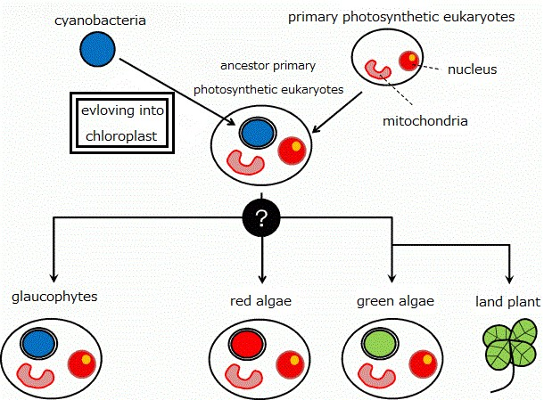
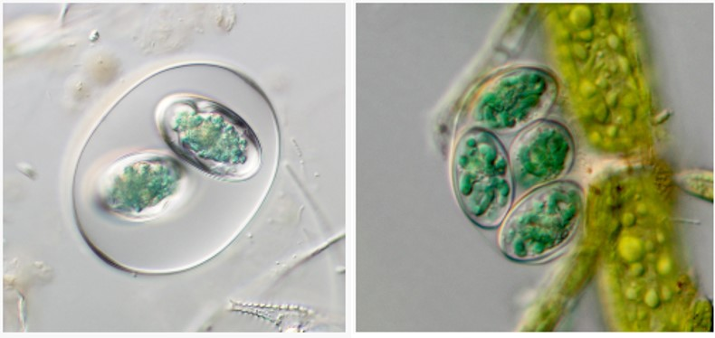
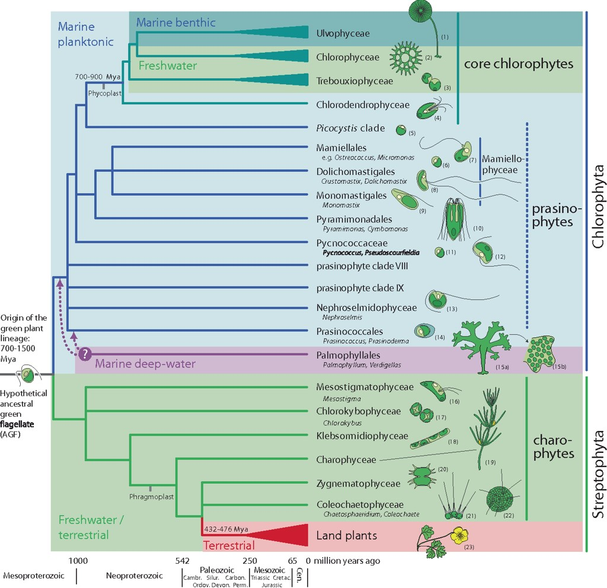

Topic 4 – Plant Evolution and Global Diversity
Plant evolution is the multi-stage historical process wherein ancient freshwater green algae transitioned to land approximately 470–500 million years ago. These organisms subsequently specialized and developed diverse adaptations to dominate terrestrial and freshwater ecosystems, whereas algae continue to dominate marine environments.
Cyanobacteria
Traced back to approximately 3.8 billion years ago, the origins of photosynthesis began not with plants, but with prokaryotic cyanobacteria. These ancient microorganisms pioneered oxygenic photosynthesis, fundamentally transforming Earth's atmosphere long before the evolution of the plant kingdom. The oldest known fossils (stromatolites), in fact the products of cyanobacteria from Archaean rocks of western Australia, dated 3.5 billion years old.

Algae
Approximately 1.5 to 1.6 billion years ago, a crucial evolutionary event occurred when a non-photosynthetic eukaryotic cell engulfed a photosynthetic cyanobacterium. Instead of digesting it, the host cell formed a permanent symbiotic relationship with the microbe—a process known as primary endosymbiosis. Over time, this captured cyanobacterium evolved into the very first chloroplast, giving rise to green algae and effectively establishing the foundation for the entire plant kingdom.


Today, within the formal Kingdom Plantae (also known as Archaeplastida), the algal group is strictly limited to Glaucophytes (Glaucophyta), red algae (Rhodophyta), and green algae (two divisions, Chlorophyta and Charophyta), which all inherited their chloroplasts via primary endosymbiosis. In contrast, all other organisms traditionally called 'algae' arose through secondary endosymbiosis—a process where a non-photosynthetic eukaryote engulfed an existing red or green alga rather than a cyanobacterium. Consequently, these organisms belong to completely distinct evolutionary lineages and kingdoms. Diatoms and Kelps belong to the lineage of Stramenopiles (Heterokontophytes, part of the SAR supergroup, former Kingdom Chromista). They acquired their chloroplasts by engulfing a red alga. Euglenoids (Euglenophyta) belong to the Excavata lineage and are placed within the protists (former Kingdom Protista), having acquired their chloroplasts independently by engulfing a green alga.

Following the establishment of green algae (Viridiplantae), a fundamental evolutionary split occurred, dividing them into two major lineages (divisions): the Chlorophyta and the Charophyta. Chlorophyta represents the core green algae group. They diversified primarily in marine environments and open waters, evolving into a vast array of single-celled, colonial, and multicellular forms (such as Volvox or Ulva / sea lettuce) that remain dominant in water ecosystems today. Charophyta, on the other hand, adapted largely to freshwater habitats, moving into shallow, edge-of-water environments. This lineage underwent crucial structural and cellular changes—such as the development of advanced cell division machinery (the phragmoplast) and protective compounds against drying out. It was this specific freshwater lineage of Charophytes (specifically organisms closely related to modern Zygnematophyceae and Coleochaetophyceae) that eventually accumulated the precise adaptations necessary to successfully make the transition from water to land, giving rise to all Embryophytes (Land Plants). Streptophyta is defined as a group of green algae (Charophyta in this case) from which land plants, or embryophytes, originated."

The actual colonization of land occurred during the early Paleozoic Era, approximately 470 to 500 million years ago (spanning the Cambrian and Ordovician periods). However, the exact appearance of these pioneer land plants remains unknown, as macrofossils from this earliest phase are entirely lacking. Their presence is documented solely through fossilized microspores found in ancient sediments. While these resilient spores prove that plants had successfully adapted to land and were reproducing through the air, they offer no information regarding the morphology of the plant thalli (bodies). As a result, the structural transition from freshwater charophytes to the first true embryophytes remains one of the most intriguing mysteries in evolutionary biology.
Bryophytes and extinct Early Land Plants
The most primitive lineages of early land plants are represented by the extant bryophytes (mosses, liverworts, and hornworts) and the iconic, extinct rhyniophytes and related early polysporangiophytes, most notably Cooksonia.
These organisms possessed a vital waxy cuticle to seal in moisture, but their implementation of stomata reveals a highly specific evolutionary gradient: while Cooksonia and rhyniophytes bore functional stomata directly along their green, photosynthetic bodies, bryophytes never develop stomata on their vegetative stems or leaves, restricting them strictly to the sporangial capsules of mosses and hornworts, while liverworts lack them entirely. At the cellular level, these early groups grew utilizing only a single apical cell and entirely lacked complex meristematic tissues. Consequently, their internal tissue structure remained in a very primitive stage of differentiation compared to later plant lineages, exhibiting only simple conductive cells rather than true vascular architecture. Coupled with the fact that these early forms lacked or had minimal lignin to reinforce their walls, both Cooksonia and primitive bryophytes were constrained to a small stature, forming low-lying, damp-dependent mats.Vascular plants
The evolutionary transition of vascular sporogenous plants to terrestrial environments began during the late Silurian and early Devonian periods of the Paleozoic era, eventually leading to their absolute dominance during the Carboniferous period. This successful colonization was driven by the development of a specialized vascular system comprised of xylem and phloem, organized into vascular bundles to efficiently transport water and nutrients, supplemented by mechanical tissues like sclerenchyma for structural support. It also led to the evolution of true vegetative organs (roots, stems, and true leaves), which evolved differently across the group's distinct lineages: lycophytes, representing the microphyllous lineage, developed needle-like leaves covering the stem surface; ferns developed large, complex megaphylls; and horsetails became distinguished by their jointed stems, whorled branches, and highly reduced leaves.
While their reproduction still relies on spores produced within sporangia, these plants exhibit a significant shift toward a dominant sporophyte generation over a reduced gametophyte. Furthermore, these plants display remarkable variability in their reproductive structures. This includes distinct modes of development, such as leptosporangiate and eusporangiate types, and a differentiation in spore types—ranging from homospory to heterospory (producing distinct microspores and macrospores that form separate male and female gametophytes). Notably, unique morphological adaptations also arose during this divergence, such as the ribbon-like elaters (haptera) attached to horsetail spores to facilitate their dispersal. During the Carboniferous, these evolutionary traits allowed giant, tree-like species to form Earth's first massive swamp forests, which later became the foundation for today's global coal deposits.
Seed plants
The evolutionary emergence of seed plants (spermatophytes) during the late Devonian period marked a profound milestone in terrestrial colonization, culminating in the widespread dominance of gymnosperms during the Mesozoic era. This revolutionary transition was driven by the evolution of the seed—a highly protective structure containing an embryo and nutrient reserves—which, alongside the development of pollen, completely decoupled plant reproduction from the requirement of liquid water. Unlike their sporogenous ancestors, gymnosperms produce "naked seeds" exposed on modified leaves or in cone-like structures (strobili). They exhibit an extreme reduction of the gametophyte generation, which is entirely dependent on the dominant sporophyte. Structurally, gymnosperms achieved greater sizes and longevity through the development of secondary growth, driven by a vascular cambium that produces dense wood (secondary xylem) composed mainly of tracheids.
The lineage exhibits high evolutionary diversity split into four distinct groups: the classic, needle-leafed conifers (Coniferophyta), adapted to cold or arid environments with specialized resin ducts; the ancient cycads (Cycadophyta), featuring palm-like leaves and flagellated sperm; the relict Ginkgo biloba (Ginkgophyta), unique for its fan-shaped deciduous leaves and motile sperm; and the enigmatic gnetophytes (Gnetophyta), which independently evolved advanced vessel elements in their xylem, bridging structural characteristics between gymnosperms and angiosperms.
Flowering plants
The evolutionary radiation of flowering plants (angiosperms) during the Cretaceous period led to their absolute dominance over global ecosystems, a position they maintain today. This unparalleled success was driven by major innovations: the flower, which attracted animal pollinators; carpels closed and fused into pistils protecting the ovules; and double fertilization, producing a unique triploid endosperm for embryo nutrition. Furthermore, the development of fruit enhanced seed dispersal, while their xylem evolved advanced vessel elements for highly efficient water transport.
For description of monocots and dicots go to the Chapter 11
Plant diversity
Global plant diversity encompasses an estimated 400,000 to 500,000 total species, with approximately 374,000 species officially known and described to science. In the broadest evolutionary sense (Archaeplastida), this includes photosynthetic algae such as Glaucophyta, Rhodophyta (red algae), Clorophyta and Charophyta (both of green algae), alongside land plants. By far the most species-rich and dominant group are the flowering plants (angiosperms), particularly dicotyledons (eudicots), which make up the vast majority of terrestrial floral diversity.
Species Count by Plant Division
| Plant Group / Division | Estimated Global Species | Estimated European Species | Estimated Czech Species |
|---|---|---|---|
| Glaucophyta (Glaucophytes) | ~20 | ~10 | 3 |
| Rhodophyta (Red algae) | ~6,000–7,000 | ~1,000–1,500 | ~15–20 (Freshwater) |
| Green Algae (Chlorophyta & Charophyta) | ~8,000–10,000 | ~2,000–3,000 | ~700–900 |
| Bryophytes (Mosses, Liverworts, Hornworts) | ~20,000–25,000 | ~2,000–2,800 | ~860–870 |
| Pteridophytes (Ferns, Horsetails, Lycophytes) | ~12,000–14,000 | ~160–200 | ~90–100 |
| Gymnosperms (Conifers & allies) | ~1,000–1,100 | ~40–50 | ~10 (Native) |
| Angiosperms (Flowering plants) | ~300,000–350,000 | ~10,500–11,500 | ~2,250 (Native) / ~3,400 (Total) |

Practice
There are two practical lessons related to this topic: an excursion to the Botanical Garden and a laboratory exercise focusing on the microscopic anatomy of bryophytes, lycophytes, ferns, horsetails, and gymnosperms. Notably, angiosperms (including both monocots and dicots) are omitted here, as they are addressed in a subsequent lesson dedicated entirely to flowering plants.
Web pages of the MENDELU Botanical Garden.
Living euglenoids. Video link